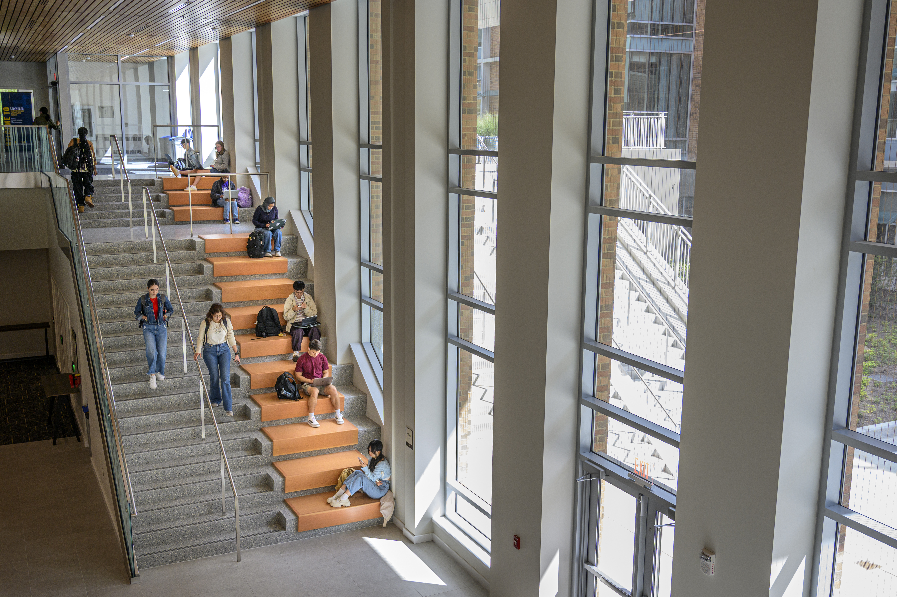

Articulate Your Skills
Think about the challenges you encountered, the actions you took, and the results of your work. Translate those experiences into clear resume bullets and examples you can use when answering interview questions.

Your engaged learning experience does not end when the project is complete. Take time to reflect on what you learned, document your work, and translate your experience into stories and materials that can support your future academic and professional goals.

Real-world project experiences can demonstrate more than technical skills. They show how you solve unfamiliar problems, collaborate with others, make decisions, and work within real-world constraints.
Reflecting on the experience can help you identify your growth and communicate it clearly to others. Your project can become evidence of your skills through resumes, interviews, portfolios, and professional relationships.
Think about the challenges you encountered, the actions you took, and the results of your work. Translate those experiences into clear resume bullets and examples you can use when answering interview questions.
Document your project process, important artifacts, key decisions, and measurable outcomes. Explain not only what your team created, but also the reasoning and learning behind your work.
Stay connected with mentors, community partners, clients, and teammates when appropriate. The relationships developed during an engaged learning experience can continue to support your professional growth after the project ends.